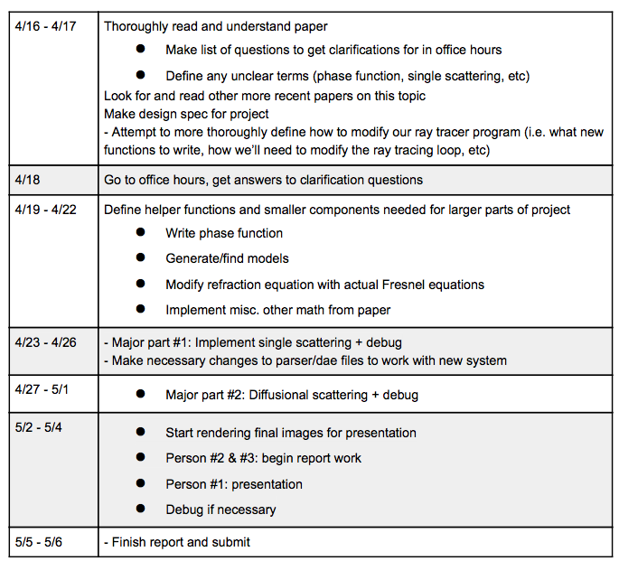

For our fifth and final project in CS184, we will extend our raytracer program from project 4 to support subsurface scattering. If successful, we will be able to render translucent materials by scattering rays through their surfaces. We are excited by the potential results and possible extensions of this project, but we are also mindful of the difficulty and time associated with our task.
The ray tracing algorithms we have implemented so far in this class has relied on the assumption that when light hits a material it either goes through or bounces off at the same place it entered. We used BRDFs (Bidirectional Reflectance Distribution Functions) to describe materials' reflectance. BRDF's take in an incoming vector and an outgoing vector and return the amount of incoming radiance that will reflect. This does not take subsurface scattering into consideration. Subsurface scattering occurs in translucent materials when light penetrates but does not always go through. When light enters a translucent material it goes in and reflects off the interior of the material multiple times before exiting again at different location than where it entered. In order to account for this, materials need to be modelled with a BSSRDF (Bidirectional Surface Scattering Distribution Function). This is a challenge to implement because in addition to integrating over all incoming directions and all outgoing directions for one point, we also need to integrate over an area where light could have scattered out at that point. Making this fast, unbiased, and realistic will take a good amount of thought and effort. Additionally, scattering does not just happen once, it can happen recursively (multi-scattering). Subsurface scattering is an important problem to solve because it expands the kinds of materials we can model by ray tracing from only opaque or transparent objects to any material in between. This includes skin, milk, leaves, marble, jade, wax, clay and many more materials that we interact with often. Pixar shorts, CGI effects, video games and many other graphics applications need a better estimate for materials than a BRDF to make believable worlds. Additionally, scattering is helpful in medical applications, in which volume can be measured by modeling tissue and light interaction. Below is a working list of resources we plan on using. We may use more than listed here or less depending on how successful we are at rendering the basic effect.
(1) Stanford BSSRDF,
(2) UCSD Fast BSSRDF,
(3) UCSD EGSR-2006-Skin,
(4) Maybe NAGY-2003-Depth,
(5) Berkeley Donner EBM 2009,
(6) Maybe Microsoft Fabscat
We will be coding on our own laptops, using the code from Projects 3 and 4. The cell rendering function will be especially useful for debugging because scattering takes a longer time to render. We have posted the relevant starter code on GitHub (if you cannot access it email one of us to allow you view permission). Additionally, for our final renders we will use lab computers to take advantage of their graphics cards.
|  |
Our goal is to implement subsurface scattering. We plan to augment our current raytracer program to be able to approximate the way light interacts with translucent materials such as jade or skin so we can render realistic looking scenes with those materials. Below are some real-life images of the effect we’re trying to capture. Notice for the jade statue, for example, how the light seems to permeate to some depth into the surface of the material.
There are many questions and challenges posed by this project. Many of the high level questions we have are the same ones present in the paper we’re using as our main reference: How do we simulate this effect in an efficient way while making our images still appear realistic? How do we sample in area and direction while keeping our estimators unbiased? What types of different subsurface scattering can occur? What is the behavior of rays scattering inside a homogenous surface in general?
In addition to these high level questions, we also have much more lower level questions purely dealing with the logistics of our program: How do we need to modify our dae files to work with translucent materials? What data do we need to collect to accurately represent our materials?
We intend to measure the quality of our simulation mainly through visual comparison. We will have multiple renderings of the scene, one with the full subsurface scattering system, one with only single scattering, one with only multiple scattering, and then one without any form of subsurface scattering. Additionally, we will render a scene with our full subsurface scattering implementation and compare that to the same scene rendered with a modeling program like Maya and see how their subsurface scattering compares to our own.
We intend to quantify our simulation by measuring render time and by attempting to create a visualization for how many rays permeate our surfaces and how deeply. For the render time, we will once again render four different versions of the same scene (one with the full subsurface scattering system, one with only single scattering, one with only multiple scattering, and then one without any form of subsurface scattering) and measure the rendering time of each. For the visualization, we were considering making some sort of heat map centered on the boundary of a surface that would show how many rays on average are scattering into our surface, how deeply they’re scattering, and where they’re scattering to.
We plan to deliver an augmented version of our raytracer that can simulate subsurface scattering as described in the Jensen et al. paper. This includes integrating the BSSRDF, doing single scattering evaluation for arbitrary geometry, and doing diffusion approximation for arbitrary geometry. These are the core components of the subsurface scattering simulation in the Jenson et al. paper that we feel are necessary in order to fully achieve the subsurface scattering effect, and we should have them working for at least one translucent material type. We also hope to have a report that at the very least has the visual comparison components mentioned in the Qualify section above, and the rendering time measurements mentioned in the Quantify section above.
We do have some hesitations. We’re concerned that, in addition to debugging the functions that physically model the subsurface scattering effect, getting subsurface scattering to work with our current raytracer could take some unpredictable amount of time. In this worst-case scenario, our program should still integrate the BSSRDF and do single scattering evaluation for arbitrary geometry, and maybe have diffusion approximation for arbitrary geometry fully implemented.
If we are able to complete the above baseline plan with time to spare, there are many of exciting ways we plan on expanding our project! The following are a list of ideas we had for expanding our baseline program, listed in the chronological order in which we would implement them.
{kind=link}
{kind=link}
{kind=link}